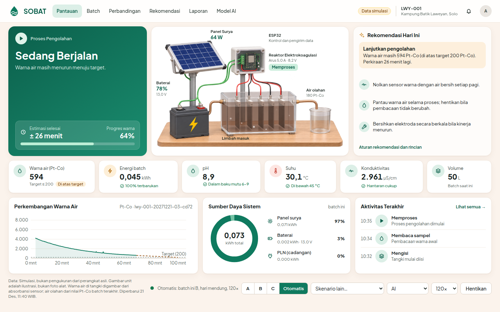

Solar-powered Operation for Batik-wastewater Treatment: laporan progres dan kekurangan proyek
SOBAT adalah unit kecil yang mengolah limbah batik dengan elektrokoagulasi bertenaga surya, dengan PLN sebagai cadangan. Sensor warna memantau air, dan kontroler menghentikan arus saat warna memenuhi baku mutu.
Perangkat lunaknya sudah berjalan: simulasi, kontroler, model AI, backend, dashboard, dan firmware ESP32 yang sudah terkompilasi. Yang belum ada adalah bukti fisik. Alatnya belum dirakit, belum ada uji bench, dan firmware belum pernah berjalan di papan. Semua angka hasil dalam laporan ini berasal dari simulasi dengan parameter tebakan tim, sehingga membuktikan logika sistem, belum akurasi alat.
Risiko terbesar: bila kalibrasi sensor warna meleset ke 0,6 kali nilai sebenarnya, batch lolos pada simulasi jatuh dari 98% ke 0%. Uji bench harus mengukur ini lebih dulu.
Hanya sekitar 5% zat warna yang menempel di kain, dan sisanya terbuang sebagai limbah. Sebagian industri batik di Laweyan berada di lahan yang lebih rendah dari IPAL komunal, sehingga limbahnya tidak bisa mengalir ke sana. IPAL yang ada juga tidak bekerja optimal: studi UMS mencatat IPAL hanya menerima limbah dari 2 usaha rumahan dan 2 dari 3 motor pengaduknya rusak. Lahan untuk IPAL baru sulit didapat karena Laweyan adalah permukiman padat.
DLH Surakarta menyebut hanya 22 dari 41 industri batik yang tercakup IPAL, dengan total limbah sekitar 308 m³ per hari. Tanggal artikel sumbernya tidak terlihat, jadi angka ini perlu dikonfirmasi ke DLH. Sampel UMS (3 UMKM, 4 sampel) menunjukkan COD 409 sampai 11.545 ppm, TSS 160 sampai 7.380 ppm, dan pH 8,4 sampai 10,8. Variasi sebesar ini membuat waktu proses tetap sulit cocok untuk semua batch, dan itulah alasan SOBAT memakai kendali berumpan balik.
Limbah dipompa ke reaktor 50 liter. Arus DC melarutkan pelat besi menjadi gumpalan yang menangkap zat warna, lalu gumpalan diendapkan. Sensor warna dibaca tiap 10 detik, dan arus berhenti saat warna mencapai target 200 Pt-Co (Permen LHK P.16/2019). Setelah 30 menit pengendapan, warna akhir diverifikasi. Bila belum lolos, proses diulang sekali. Endapannya diperlakukan sebagai limbah B3 (PP 22/2021).
Kontroler berjalan di ESP32, jadi proses tetap jalan walau internet putus. Data dikirim lewat MQTT ke server, lalu tampil di dashboard dan laporan untuk DLH. Model AI memperkirakan muatan listrik yang dibutuhkan dari kondisi awal limbah. Perkiraan itu dipakai untuk estimasi waktu, penjadwalan energi, dan peringatan anomali, sedangkan keputusan berhenti tetap dari sensor.
| Bagian | Yang sudah ada | Status |
|---|---|---|
| Kembaran digital | Reaktor, kinetika warna, tegangan sel, pasivasi, panas, dan sensor dengan noise, drift, saturasi, gelembung, serta flok | Berjalan |
| Surya, baterai, PLN | Irradiansi Solo 2024 dari NASA POWER, tiga kebijakan energi | Berjalan |
| Kontroler | Isi, sampling, pengenceran, cek energi, jeda surya, pembalikan polaritas, endap, verifikasi, ulang, koreksi per unit, deteksi warna mentok | Berjalan |
| Model AI | Gradient boosting dengan prior fisika, dilatih dari data simulasi | Tanpa data nyata |
| Eksperimen | Perbandingan strategi, kampanye multi-hari, ukuran panel dan baterai, sensitivitas, ketahanan model | Hanya simulasi |
| Backend dan infrastruktur | FastAPI, login, MQTT, InfluxDB, SQLite, laporan CSV, Docker | Berjalan lokal |
| Dashboard | Pantauan, Batch, Perbandingan, Rekomendasi, Laporan, dan Model AI, juga untuk ponsel | Berjalan |
| Firmware ESP32 | Kontroler C++, sensor, aktuator, pengaman, MQTT, simpan saat offline, konsol kalibrasi | Belum di papan |
| Server online | Konfigurasi TLS, Caddy, dan DuckDNS | Belum dicoba |
| Skrip kalibrasi bench | Belum ada | Belum |
| Uji bench dan data lab | Belum ada data di repositori | Belum |
| Perangkat keras | Reaktor, panel, sensor, dan rakitan kendali belum dirakit | Belum |

Angka berikut bukan hasil eksperimen. Kondisi dasar, 100 batch acak, irradiansi Solo asli. Lolos berarti warna akhir sebenarnya di dalam simulasi paling tinggi 200 Pt-Co.
| Strategi kendali | Batch lolos | Energi (kWh/m³) | Waktu proses (menit) |
|---|---|---|---|
| Waktu tetap, disetel rata-rata | 59% | 0,88 | 61 |
| Waktu tetap, disetel aman | 89% | 1,49 | 104 |
| Umpan balik sensor | 95% | 0,99 | 68 |
| AI (prediksi dan umpan balik) | 95% | 0,99 | 68 |
Umpan balik sensor adalah sumber keunggulan utama. Dibanding waktu tetap yang disetel aman, batch lolos lebih banyak dengan energi sepertiga lebih kecil. Pada kondisi ini AI tidak menambah mutu air dibanding umpan balik saja.
Untuk energi, panel 200 Wp dan baterai 600 Wh menjalankan 3 sampai 5 batch per hari tanpa PLN pada data irradiansi 2024. Pada panel 50 Wp, surya murni hanya meloloskan 9 sampai 17% batch, sedangkan hibrida di atas 90%. Di sana AI mulai berguna: pada 50 Wp, 150 Wh, 3 batch per hari, waktu tunggu turun dari 114 menjadi 27 menit dan batch selesai naik dari 82% menjadi 97%. Konsekuensinya, porsi terbarukan turun dari 49% menjadi 44% dan batch lolos dari 96% menjadi 93%.
Satu parameter diubah ke kasus terburuk yang diuji, lainnya tetap, 40 batch per kondisi, kendali umpan balik. Nilai dasarnya 98%.
Gambar 2. Batch lolos pada kasus terburuk tiap asumsi, simulasi. Angka di kurung adalah pengali terhadap nilai dasar.
Kekurangan di bawah diurutkan per kelompok, dari yang paling memengaruhi kebenaran klaim proyek.
| Kekurangan | Dampak | Langkah |
|---|---|---|
| Belum ada uji bench dan data lab | Semua hasil masih simulasi. Klaim TKT 3 baru sah setelah ada pembuktian eksperimental. | Uji bench, lalu uji lab warna, COD, dan TSS |
| Parameter kunci masih tebakan: laju warna, kalibrasi sensor, warna per COD, tegangan lebih | Hasil bisa berubah total (Gambar 2). | Ukur di bench dan ganti di config/sim.yaml |
| Kebutuhan muatan bisa jauh lebih besar. Paper Fadzli dkk. 2024 (elektroda Al, pH 3) menyiratkan sekitar 7 kali asumsi kami, menurut turunan kami | Pada kasus itu unit standar hanya lolos 5%. Reaktor 1600 cm² dengan 35 A lolos 60%, dengan energi 7,8 kWh/m³. | Ukur muatan nyata dengan elektroda Fe pada limbah Laweyan |
| Sensor optik belum terbukti tahan gangguan gumpalan | Pembacaan warna saat proses bisa keliru, padahal keputusan berhenti bergantung padanya. | Uji ruang ukur berfilter atau baca setelah jeda singkat |
| Model AI dilatih dari data sintetis dan tidak tahan bila simulator salah | Galat 16% pada kondisi latih naik ke 47 sampai 102% saat laju warna 0,5 sampai 2 kali. Koreksi per unit menekannya ke sekitar 20%, tetapi hanya memperbaiki perkiraan waktu, mutu air nyaris tidak berubah. | Latih ulang dari batch nyata |
| Kekurangan | Dampak | Langkah |
|---|---|---|
| Status lolos hanya menilai warna | Baku mutu juga mengatur COD (150), TSS (50), BOD (60), dan pH (6 sampai 9). Perangkat tidak mengukur COD, TSS, dan BOD, dan COD mungkin butuh tahap filtrasi tambahan. pH terukur tetapi belum ikut menentukan status, padahal limbah Laweyan bersifat basa (8,4 sampai 10,8). | Uji lab berkala, kaji filtrasi, masukkan pH ke penilaian |
| Kapasitas unit kecil | 50 L per batch dengan 3 sampai 5 batch per hari berarti paling banyak 250 L per hari. Data UMS: 193, 443, dan 4.116 L per hari, jadi baru cukup untuk UMKM terkecil dari ketiganya. | Hitung skala unit untuk UMKM menengah |
| Manfaat AI kecil pada kondisi normal | Sumbangannya pada mutu air nol di kondisi dasar, dan pada panel kecil ada ongkos berupa porsi terbarukan yang turun. Klaim "AI" di proposal harus dibatasi. | Ukur nilai perkiraan waktu dan peringatan anomali secara terpisah |
| Biaya belum lengkap. Simulasi memberi sekitar Rp7.700/m³ untuk listrik, elektroda, dan lumpur, dengan harga asumsi yang belum dicek | Belum termasuk modal reaktor, sensor, dan perawatan. Biaya lumpur B3 bisa menaikkan angka ini, dan daya beli perajin rendah. | Cek harga, terutama pengelolaan B3, dan susun skema dengan DLH atau CSR |
| Kekurangan | Dampak | Langkah |
|---|---|---|
| Firmware belum pernah berjalan di papan. Pin, modul, dan penguatan pengatur arus masih usulan | Sensor, aktuator, jaringan, dan pengaman belum teruji. Bug perangkat keras belum terlihat. | Ikuti urutan uji aman di firmware/README.md |
| Anggaran belum aman. Estimasi rakitan Rp4,0 sampai 6,5 juta, dana Rp4,5 juta baru turun setelah 30 besar | Rakitan rujukan firmware juga memakai 4 INA226 dan ADS1115, yang belum tercatat lengkap di daftar belanja brief. | Perbarui daftar belanja, pinjam panel dan baterai |
| Tidak ada sensor hidrogen | Firmware tidak mengawasi ventilasi, jadi keselamatan gas bergantung pada penempatan unit. | Tempatkan di ruang berventilasi, pertimbangkan sensor gas |
Model ML tidak berjalan di ESP32, dan /api/predict belum menerima kunci perangkat | Mode AI di perangkat hanya memakai prediksi fisika. | Tambahkan akses prediksi untuk perangkat |
| Fitur perangkat belum lengkap | Telemetri saat offline hilang (ringkasan batch tersimpan), TLS belum memverifikasi sertifikat, SoC baterai kasar dari tegangan, prakiraan surya tanpa data cuaca, belum ada OTA. | Benahi sebelum dipasang di lapangan |
| Kekurangan | Dampak | Langkah |
|---|---|---|
| Belum ada skrip kalibrasi dari data bench | Hasil uji bench belum bisa langsung masuk ke simulator. | Tulis skrip dari CSV uji bench |
| Belum pernah dipasang online. Kata sandi demo tertulis di repositori publik | Tidak aman bila dipasang apa adanya, dan TLS MQTT belum teruji. | Uji di VM, ganti kata sandi di .env |
| Laporan DLH belum divalidasi | Format belum dikonfirmasi DLH. Halaman Laporan hanya merangkum 200 batch terakhir dan belum punya filter tanggal. | Tanyakan kebutuhan DLH, tambah filter |
| Halaman Rekomendasi hanya membaca unit pertama, dan banyak unit belum diuji | Belum siap untuk lebih dari satu lokasi. | Tambah pemilih unit |
| Database tumbuh tanpa batas: database demo mencapai sekitar 860 MB untuk 1.591 batch, tanpa aturan retensi | Disk bisa penuh pada pemakaian panjang. | Atur retensi telemetri |
| Notifikasi Telegram di rencana MVP belum dibuat, dan tes frontend masih terbatas | Operator harus membuka dashboard. Tes tampilan sebagian masih manual. | Tambahkan setelah uji bench |
| Kekurangan | Dampak | Langkah |
|---|---|---|
| Dosen ketua (NIDN, NIDK, atau NUPTK aktif) belum tercatat. Brief per 4 November menyebutnya belum ada | Syarat mutlak: tanpa dosen, pendaftaran tidak sah. | Pastikan sebelum 7 November |
| Proposal 3 halaman dan foto prototipe belum ada di repositori | Keduanya dibutuhkan untuk mendaftar. | Susun dari laporan ini dan data bench |
| Bukti kebutuhan masih dari sumber sekunder. Data DLH perlu dikonfirmasi, dan data limbah hanya 3 UMKM | Bukti kebutuhan adalah salah satu kriteria penilaian. Wawancara atau surat mitra belum tercatat. | Hubungi DLH dan perajin, minta limbah asli |
Tanggal 8 sampai 28 November mengikuti linimasa lomba di brief, dan tahap-tahapnya bergantung pada lolos seleksi.